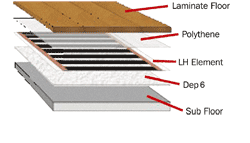
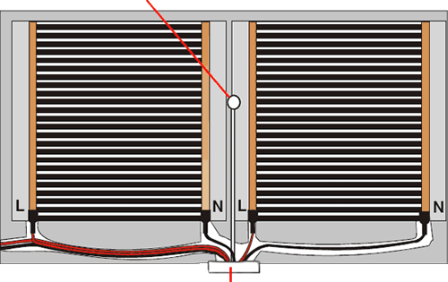
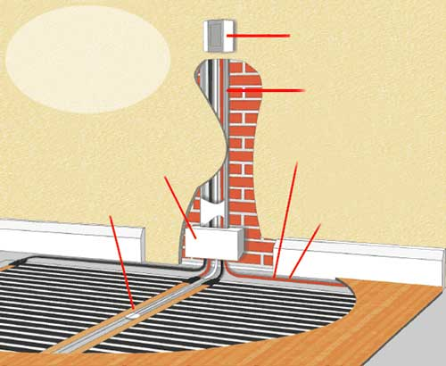

BN Thermic Ltd
34 Stephenson Way
Three Bridges, Crawley, West Sussex
RH10 1TN
England
Tel: +44 (0)1293 547361
Fax: +44 (0)1293 531432
BNTMLH01
BN Thermic Instruction Sheet
LH Heating Elements Under Laminate Flooring Systems
INSTALLATION AND OPERATING INSTRUCTIONS
1) Introduction
The LH Heating Element
LH consists of a specially formulated semi-conductive medium, coated
onto polyester film.
Power is fed to this resistive coating by way of copper conductors that
are fixed to the longitudinal edges of the heating areas. This structure
is insulated by a lamination of polyester based films that totally cover
the element and is wider than the conductive heating area, forming strong
clear edges that are designed to accept subsequent fixing to sub floor
surfaces.
Low temperature LH floor heating elements produce a gentle heat that evenly warms the entire room.
LH heating element is supplied fully prepared, cut to size, tails fitted and insulated ready for installation. LH heating element should be installed by a suitably qualified trades-person. It is not a ‘do it yourself’ product.
2) Installation Procedure
Before commencement of installation always check on the following:
- The building is weather tight, and that the glazing and doors have been fitted.
- Any floor screeds, asphalt etc. have been laid and allowed to dry out.
- All electrical first fix wiring and other mechanical services through floors have been completed.
- No cables must be allowed to come into contact with the LH heating elements.
- All electrical connections must be made in accordance with IEE 16th edition regulations and
carried out by a suitably qualified electrician.
3). Planning the Installation
Draw a plan of the floor identifying areas occupied by fixed furniture
such as kitchen cabinets (heating elements should not be installed in
these areas).
Draw the heating elements on to the plan taking the following points into
consideration.
For best value, use a small number of long elements rather than a larger
number of short elements (remember element lengths can be reduced on site
if necessary)..
Whenever possible keep the element ends fitted with the live and neutral
cables along one wall. This should be the same wall on which the thermostat
is mounted.
A minimum gap of 50mm should be maintained between the wall and the edge of the heating element. When a number of elements are being used this distance may need to be increased slightly to allow space for the cables to run to a junction box. Remember that small reductions in length can easily be made on site.
For the most even heat distribution the elements should lay side by side with no gap between them. Double-sided tape may help to hold the elements in place. Small gaps between the elements will not significantly affect the efficiency of the system. It is essential that neither the copper conductors nor the black carbon stripes are allowed to ‘overlap’.
An element can be trimmed in length by cutting carefully width-ways between the black stripes. Trimming the element will expose the ends of the two copper conductors. These exposed ends should be insulated.
NOTE: Although all LH element is visually inspected at the factory
before dispatch the elements should be checked to ensure any rough handling
has not damaged the LH element. Look for creasing or folding of the product
that could have been caused by a roll of element being trodden on. Any
such damaged areas must be discarded and replaced.
Check that the connections at the end of the rolls have not been damaged.
The connections should be firm not loose.
4). How to lay the film and connect it to the grid.
Before laying the film, lay out a 6mm layer of Dep 6 insulation. The edges of the Depron sheets may be taped together to prevent them ‘Riding Up’. The layer of insulation also acts as sound deadening that is a requirement for laminate floors.
Locate the suitably fused, low level, junction box. Create channels in the Dep 6 insulation to accommodate the return of the cables to the junction box and a channel for the floor probe (floor probe supplied with thermostat). Run the element away from the junction point with the end that the cables are attached to being closest to the junction point.
The floor probe should be positioned in between element strips and should be placed at least 1metre away from the wall. When you have a good idea where the element will be positioned cut a channel in the insulation for the probe to fit into. Never have the probe positioned under the heating part of the element.
Never lay the strips of film in such a way that their heating surfaces overlap or that nonheating cables pass under the element. You can fix the element strips in place using tape.
Overview of a typical layout
Floor Probe
Element runs away from the thermostat so the cable runs are simplified
Cablling is connected in parallel and recessed into the Dep 6 insulating layer. Cable ends must be tinned by an electrician.
Cables do not pass under the heating part of the element
Junction Point (Thermostat position)
Note:
Individual cables should be fed back to local low-level fused spur termination
boxes (provided by the electrician) and planned not to exceed the 10 amp
element rating.
Connection to the junction point should only be carried out by a qualified electrician in accordance with IEE 16th Edition regulations.
Overview of Installation
LH element on top of Dep6 insulation and underneath DPM with laminate finally laid on top
Thermostat
Conduit holding cables and lead for floor probe
Cabling runs along grooves cut into the Depron Insulation back to the junction box
Cable ends to be 'tinned' before making connection to the communing block in the junction box
Junction Spur
Floor probe lying under clear edge of element
5). Electrician Requirements
All electrical connections must be made in accordance with IEE 16th Edition regulations by a suitably qualified electrician. A fused spur or combined spur / RCD is recommended.
5a). First Resistance Check
Once all the strips are laid and interconnected check the resistance value of each circuit using an ohmmeter applying the formula:
| 52900 (v²) | = Resistance (ohms) |
| Watts |
If all the circuits are functioning satisfactorily, lay clear polyethylene film at least 0.2 mm thick upon the whole floor surface. The individual strips of polyethylene must overlap by at least 20 cm. This can be replaced with the laminate floor manufacturers preferred or recommended covering.
5b). Thermostat
The thermostat should be sited 1.5m from floor level, directly above the element termination box(es) and away from the local heat sources and large windows. A cable must be run from the junction box to the ‘common’ and ‘normally closed’ terminals of the thermostat.
NOTE: Should the total connected load in any area exceed the rating of the controller the electrician should provide a suitable switching contactor (normally located adjacent to the distribution board) with a switching feed to the controller. An option is to fit two controllers, however this may create a temperature imbalance and is generally avoided.
5c). Electrical considerations with reference to wiring from the room thermostat to heating elements.
1.5 mm² double insulated cable must be used for making up wiring harnesses. To satisfy the requirements of an acceptable British Standard sheathed single core cable to BS.6004 would be acceptable.
6). Laying a floating floor.
The laminate floor must be laid according to the manufacturers recommendations. When laying a floor you must take special care not to damage the element and the supply cable. Walking on the LH element must be kept to a minimum. When walking on the element cannot be avoided soft-soled shoes must be worn.
7). Second Resistance Check
Once the laminate floor has been laid check the resistance of the total circuit using an ohmmeter and record the result on the installation record form.
8). Warranty
This product is designed to give many years of satisfactory service. In the unlikely event of a malfunction the product is guaranteed for a period of 10 years from the date of purchase. This guarantee is validated by the Installation Record form which is supplied with every underfloor heating product being fully completed by the qualified installing contractor at the time of installation and returned to BN Thermic Ltd within 30 days of installation. This guarantee covers the full purchase price of the product only.
Control devices carry the manufacturers 1 year warranty.
Download LH Installation Record Form
LH Installation Record Form
Please complete this form at the time of installation and post to BN Thermic within 30 days of installation. We strongly advise you to retain a copy for your records. Warranty claims will not be considered if the form has not been completed and returned to us within the required time.
| Name of property owner |
|---|
| Address | |
|---|---|
| Telephone number |
|---|
| Purchased from |
|---|
| (Name and location of Wholesaler) |
|---|
| Date of purchase |
|---|
| Name of company who installed the system |
|---|
| Installer’s telephone number |
|---|
| Date of installation |
|---|
| LH models and quantities |
|
|---|
| Model number of controller |
|---|
| Room (bathroom, kitchen etc) |
|---|
| Dimensions of room, excluding permanent fixtures such as cupboards and baths. (if the room is of a complex shape you may prefer to make a dimensioned sketch and attach it to this form) |
|---|
| Surface on to which the LH element was laid |
|---|
| Type of floor surface |
|---|
| Thickness of floor surface |
|---|
| Resistance Checks – Refer to the Installation Instructions |
|---|
| First (ohms) check |
|---|
| Second (ohms) check |
|---|
Assuming correct installation, BN Thermic underfloor heating systems will give many years of satisfactory service. In the unlikely event of a malfunction resulting from faulty manufacture, the systems are guaranteed for a period of 10 years from date of purchase. The guarantee covers the full purchase price but not the cost of repairing or replacing the heater in the floor.
Control devices carry the manufacturers 1 year warranty only.